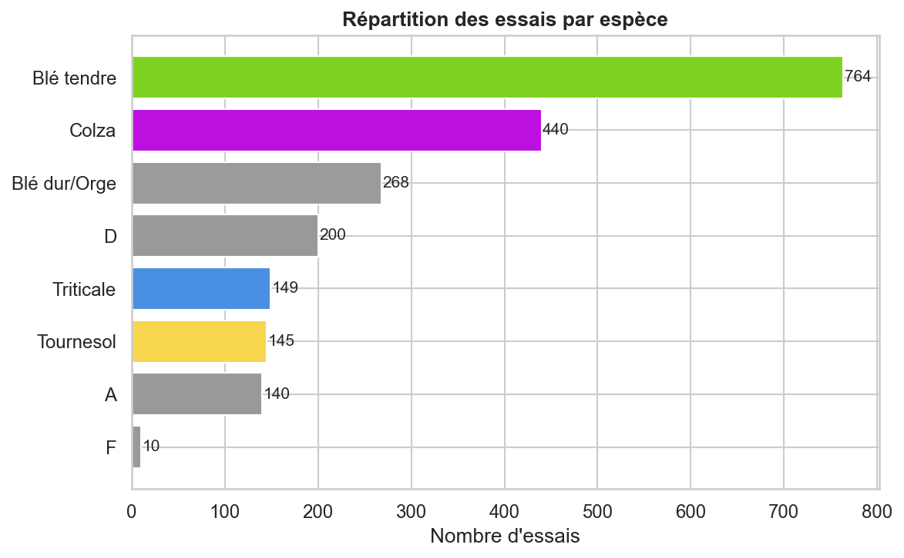
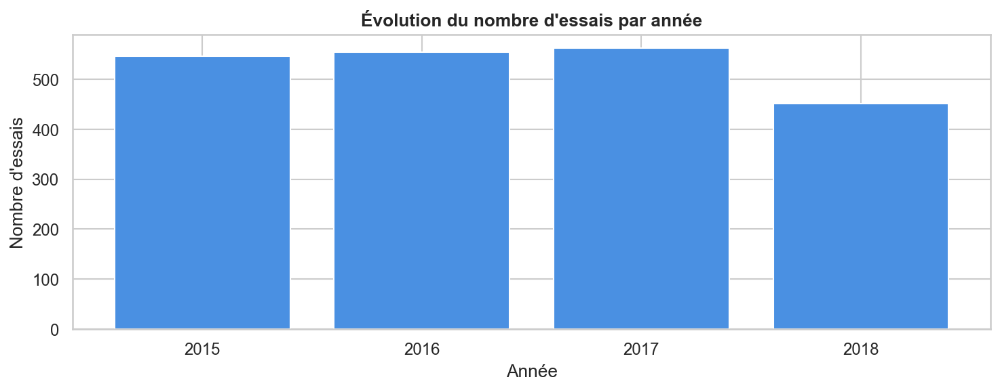
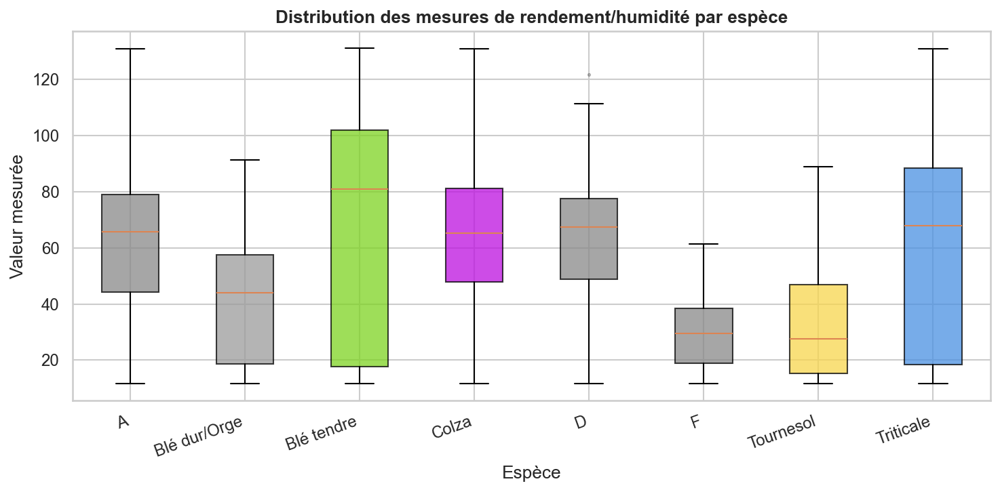
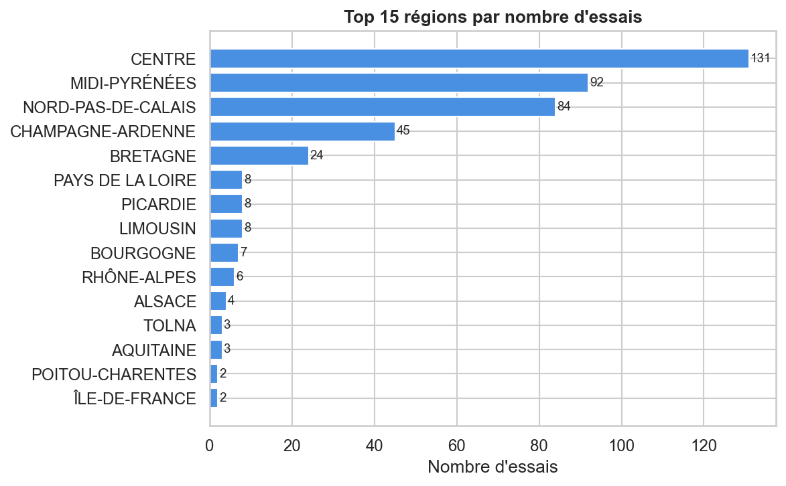
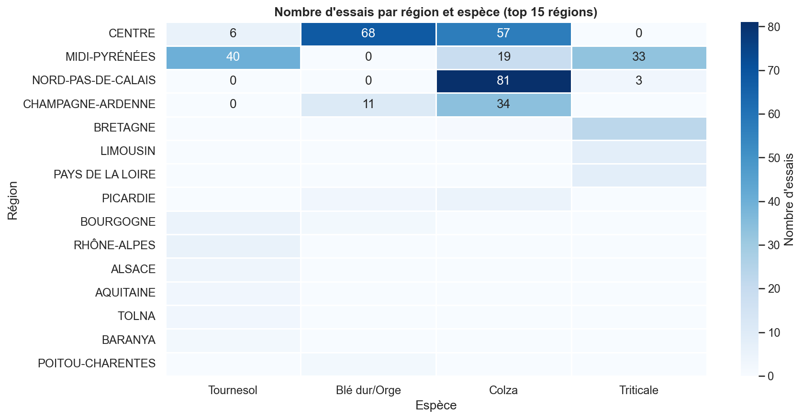
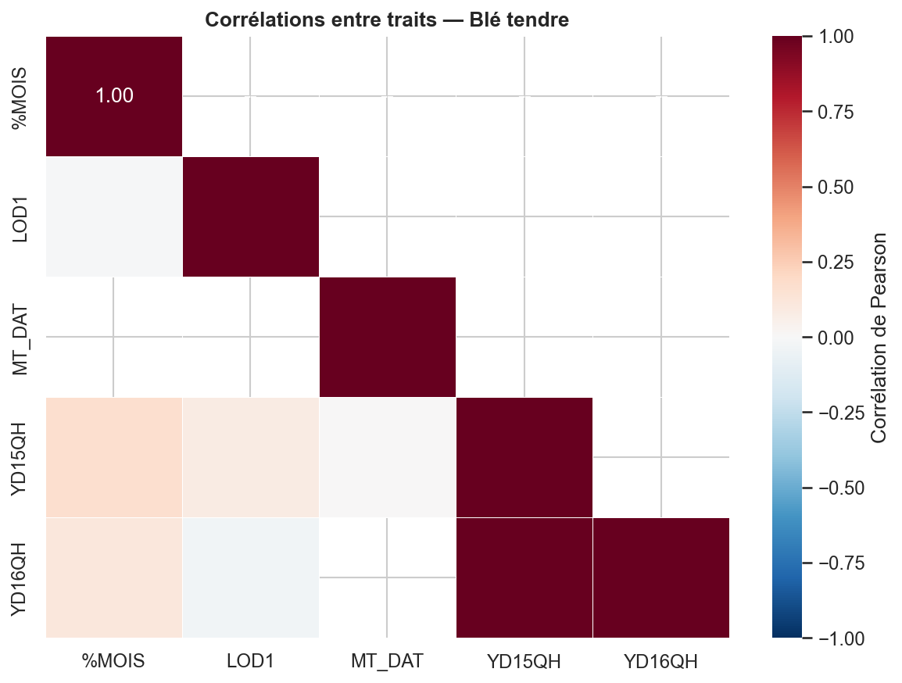
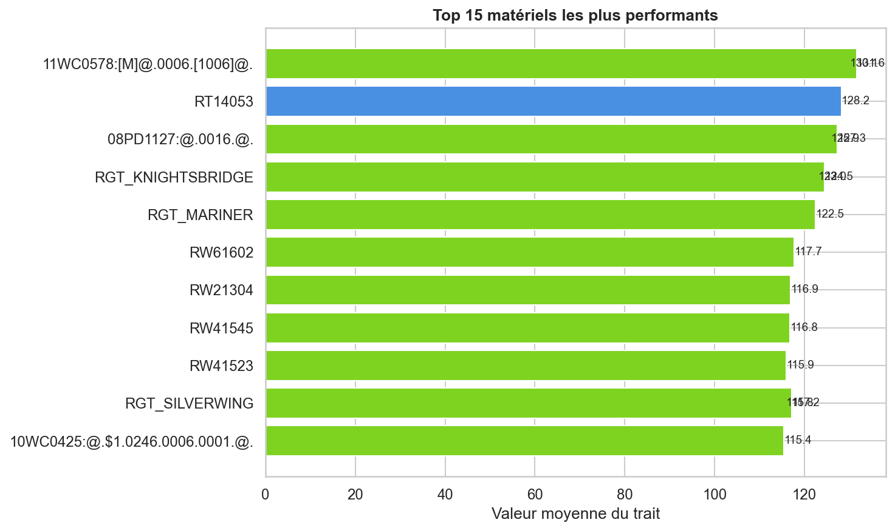

🚀 Vues principales — Ouvrir dans le navigateur
Rapport Technique Complet
reports/RAPPORT_TECHNIQUE.htmlRapport principal HTML autonome
Dashboard Analytique
reports/dashboard.htmlDashboard interactif Chart.js
Carte Interactive des Essais
reports/carte_essais.htmlCarte Folium 424 points GPS
⚙️ Pipeline Big Data — 12 phases exécutées
📈 Graphiques générés (Tableau / Spotfire style)








📄 Rapports JSON — Données brutes des phases
📊 kpi_globaux.json 54 KB
KPIs globaux du pipeline : 2 116 essais, 28 697 matériels, 136 358 mesures, 8 espèces, 17 régions, années 2015-2018, tops traits et espèces.
🔌 sqoop_jobs.json 80 KB
6 jobs Sqoop : statuts SUCCESS, durées, nombre de lignes importées par source (total : 326 688 lignes), configuration JDBC et Parquet.
⚡ kafka_report.json 54 KB
4 topics Kafka, 535 messages produits/consommés (taux 100%), 15 alertes qualité outliers, 20 événements géo NDVI/drones.
🔥 spark_report.json 37 KB
PySpark 3.5.5 local[*], 40.01s, corrélation YD×humidité = 0.2464, 38 agrégats espèce×trait, top 30 matériels exportés.
🐝 hive_report.json 45 KB
5 requêtes HiveQL exécutées via DuckDB (Q1–Q5), toutes succès, durées 0.05–0.10s chacune, résultats agrégés par espèce/année.
🔍 drill_report.json 51 KB
6 requêtes Drill SQL ad-hoc sur fichiers Parquet sans schéma prédéfini : schema discovery, cross-file join, outliers, TOP-N régions.
🔀 nifi_provenance.json 89 KB
Traçabilité complète NiFi : 6 FlowFiles avec UUID, horodatages, provenance par processeur (GetFile→ValidateRecord→RouteOnAttribute→...).
🔬 profiling.json 58 KB
Qualité des données par source : taux de remplissage, types détectés, valeurs min/max/mean, nulls, doublons par colonne.
🗄️ hbase_summary.json 10 KB
Résumé des 3 tables HBase : experiments (2 116), results (~50K), materials (~20K). Row keys, familles de colonnes, schéma.
🔗 correlations.json 21 KB
Matrices de corrélation entre traits agronomiques par espèce. YD15QH × %MOIS = 0.2464 (Blé tendre, Spark).
📋 Données CSV — Résultats des analyses
📦 fact_table.csv
Table de faits principale — 136 358 lignes × 47 colonnes. Résultat final du pipeline ETL Talend. Base de toutes les analyses.
📊 stats_espece_trait.csv
Statistiques descriptives par espèce × trait : count, mean, std, min, 25%, 50%, 75%, max.
🏆 top_materiels.csv
Classement des meilleurs matériels génétiques par rendement YD15QH. Données de sélection variétale.
📅 evolution_annuelle.csv
Évolution du rendement moyen par espèce de 2015 à 2018. Détection des années favorables/défavorables.
🗺️ essais_par_region.csv
Nombre d'essais par région × espèce. Données source du Top 17 régions.
📐 anova_region.csv
Résultats ANOVA par région : F-statistic, p-value, significativité. Détecte si les différences régionales sont significatives.